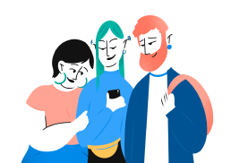

Главная > Блог > Как не утонуть в тревоге и управлять своими страхами
Как не утонуть в тревоге и управлять своими страхами
Автор: Лиза Файнтух 21.08.2021
Содержание
Заголовок h3
Один из самых важных навыков, которые может дать работа с психотерапевтом - умение в разных ситуациях по-разному обходиться со своими эмоциями. Снять этот процесс с автопилота и перевести его в поле сознания.
Давайте, к примеру, разберем тревогу. Можно разложить перед собой целую коллекцию доступных реакций и выбрать нужную:
Мы знаем, что нуждаться в помощи и поддержке в трудные периоды жизни абсолютно нормально для любого человека, и стремимся сделать психотерапию безопасной, удобной и доступной каждому
Анна Крымская
Что еще можно делать с тревогой?
Управлять ей через что-то внешнее: включать музыку, которая создает другое настроение, сесть за работу с цифрами, которая быстренько активизирует другие участки мозга, читать блоги, которые вас успокаивают и отвлекают.
А еще порой можно разрешить себе тревогу заесть чем-то вкусным. Это, конечно, не самая здоровая стратегия, но в ряде ситуаций можно считать ее вполне рабочей. Особенно, когда внутренний ресурс на нуле, а поддерживающее окружение не в доступе.
Онтогенез речи отражает групповой эриксоновский гипноз.
Онтогенез речи отражает групповой эриксоновский гипноз.
Мы знаем, что нуждаться в помощи и поддержке в трудные периоды жизни абсолютно нормально для любого человека, и стремимся сделать психотерапию безопасной, удобной и доступной каждому
Одна из ключевых задач психотерапии как раз и заключается в том, чтобы этот репертуар расширять и обучать человека пользоваться доступными ему реакциями в той последовательности, пропорции и объеме, которые подходят именно ему. Без оглядки на то, "как правильно" или "как у других".
Чем шире доступный вам репертуар реакций и чем более осознанно вы можете выбирать из него то, что лучше всего подойдет в каждой конкретной ситуации, тем больше будет ваша устойчивость к стрессу, депрессии, неопределенности, да и к жизни в целом.
А еще порой можно разрешить себе тревогу заесть чем-то вкусным.
Чем шире доступный вам репертуар реакций и чем более осознанно вы можете выбирать из него то, что лучше всего подойдет в каждой конкретной ситуации, тем больше будет ваша устойчивость к стрессу, депрессии, неопределенности, да и к жизни в целом.
Упражнение #1
Нужно последовательно напрягать и расслаблять каждую мышцу в теле на несколько секунд. Напрягать стоит довольно сильно, чтобы потом отчетливее ощущать расслабляющий эффект. Начать можно с пальцев ног и постепенно подниматься вверх. Смысл в том, чтобы через напряжение дать стрессу выход, а затем вновь привести себя в спокойное состояние через расслабление
Что еще можно делать с тревогой?
Управлять ей через что-то внешнее: включать музыку, которая создает другое настроение, сесть за работу с цифрами, которая быстренько активизирует другие участки мозга, читать блоги, которые вас успокаивают и отвлекают.
А еще порой можно разрешить себе тревогу заесть чем-то вкусным. Это, конечно, не самая здоровая стратегия, но в ряде ситуаций можно считать ее вполне рабочей. Особенно, когда внутренний ресурс на нуле, а поддерживающее окружение не в доступе.
Чем шире доступный вам репертуар реакций и чем более осознанно вы можете выбирать из него то, что лучше всего подойдет в каждой конкретной ситуации, тем больше будет ваша устойчивость к стрессу, депрессии, неопределенности, да и к жизни в целом.
А еще порой можно разрешить себе тревогу заесть чем-то вкусным.
Упражнение #2
Нужно последовательно напрягать и расслаблять каждую мышцу в теле на несколько секунд. Напрягать стоит довольно сильно, чтобы потом отчетливее ощущать расслабляющий эффект. Начать можно с пальцев ног и постепенно подниматься вверх. Смысл в том, чтобы через напряжение дать стрессу выход, а затем вновь привести себя в спокойное состояние через расслабление
Чем шире доступный вам репертуар реакций и чем более осознанно вы можете выбирать из него то, что лучше всего подойдет в каждой конкретной ситуации, тем больше будет ваша устойчивость к стрессу, депрессии, неопределенности, да и к жизни в целом.
А еще порой можно разрешить себе тревогу заесть чем-то вкусным.
Чем шире доступный вам репертуар реакций и чем более осознанно вы можете выбирать из него то, что лучше всего подойдет в каждой конкретной ситуации, тем больше будет ваша устойчивость к стрессу, депрессии, неопределенности, да и к жизни в целом.
А еще порой можно разрешить себе тревогу заесть чем-то вкусным.
Одна из ключевых задач психотерапии как раз и заключается в том, чтобы этот репертуар расширять и обучать человека пользоваться доступными ему реакциями в той последовательности, пропорции и объеме, которые подходят именно ему. Без оглядки на то, "как правильно" или "как у других".
Упражнение #3
Нужно последовательно напрягать и расслаблять каждую мышцу в теле на несколько секунд. Напрягать стоит довольно сильно, чтобы потом отчетливее ощущать расслабляющий эффект. Начать можно с пальцев ног и постепенно подниматься вверх. Смысл в том, чтобы через напряжение дать стрессу выход, а затем вновь привести себя в спокойное состояние через расслабление

Загружаем свободные окошки
Все в порядке, сейчас мы перенаправим вас в сервис записи Qlick, через который удобно выбрать дату, время встречи и оплатить её
Лилия
Психолог
Опыт 6 лет / 43 года
С чем работает психолог
Тревога, тревожности
Подавленность
Тревога и панические атаки
8 Видео сессий
Проработать небольшие проблемы и продвинуться в решении сложных запросов